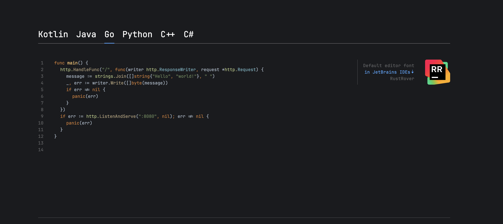
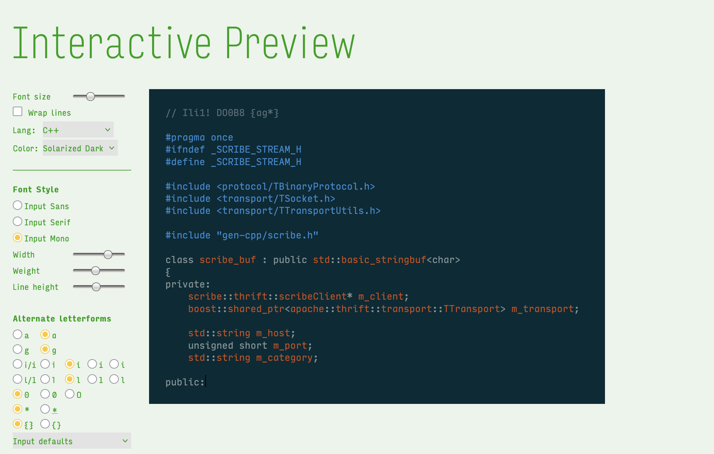
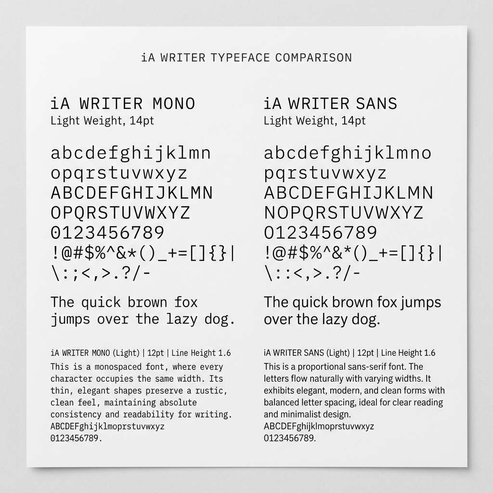
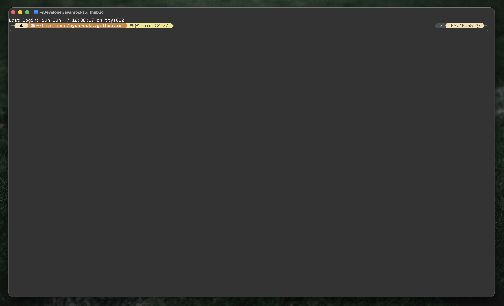
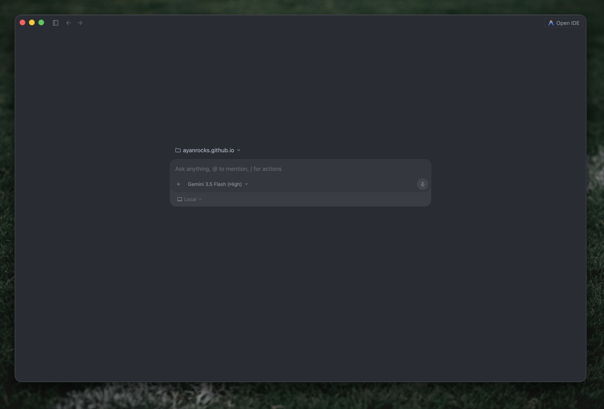
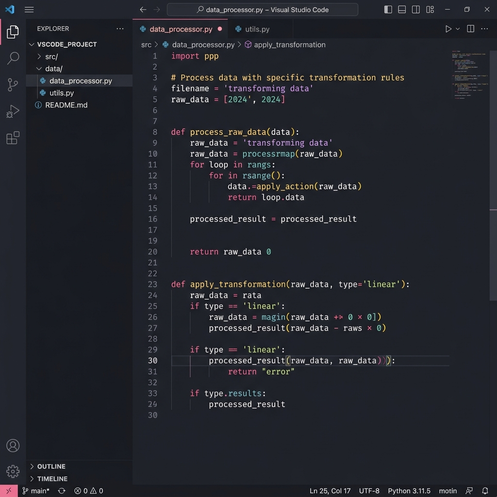

JetBrains Mono
Designed specifically for developers, JetBrains Mono provides maximum readability under prolonged coding sessions. It features increased letter height, distinct symbol shapes, and code-specific ligatures that reduce eye strain.

Input Mono
Input is a highly modular font system designed specifically for code. It breaks the traditional monospaced rules by offering customized widths, weights, and alternate glyph shapes, allowing developers to craft their ideal reading experience.

iA Writer Fonts
Born from the iconic minimalist writing application iA Writer, this suite includes both Mono and Sans variants. Created as a modified version of IBM Plex, it delivers a clean, writer-centric layout that brings editorial structure to code and documentation.

Ghostty
Ghostty is a lightning-fast, GPU-accelerated terminal emulator. It focuses on supreme rendering performance, native OS integration, and modern features like rich typography rendering, shaders, and window transparency without sacrificing stability.

Antigravity IDE
An AI-augmented coding canvas optimized for advanced agentic software development workflows. With floating contextual panels, zero-friction debugging integration, and visual file mapping, it supports complex logic editing with ease.

Vesper & Rosé Pine
A bespoke editor visual layout blending the dark, deep gray tones of the Vesper theme with the warm, pastel highlights of Rosé Pine. Designed for low eye strain under late-night coding sessions while maintaining distinct syntax color separation.
